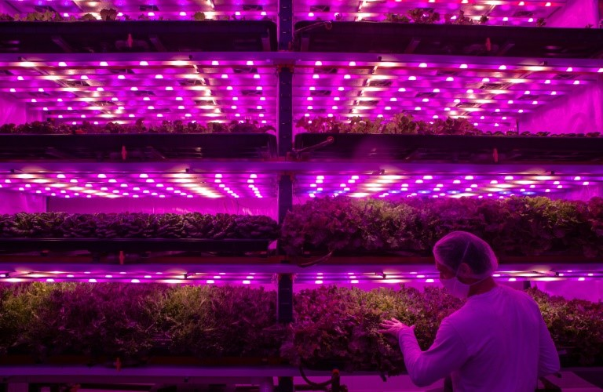
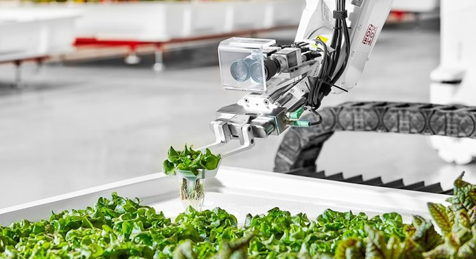
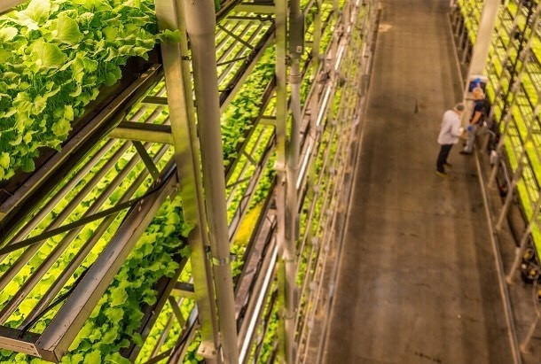
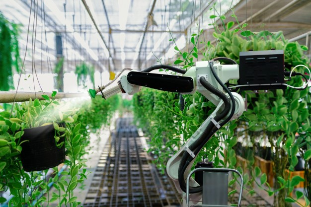

“Erradicar a fome, alcançar a segurança alimentar, melhorar a nutrição e promover a agricultura sustentável”. Foi com essa MISSÃO que a Vertical Valley foi criada em 2021, resultado do sonho de garantir sistemas sustentáveis de produção de alimentos e implementar práticas agrícolas resilientes, que aumentem a produtividade e a produção. Em poucos anos, a Vertical Valley se especializou no desenvolvimento e fabricação da Agricultura Vertical, tornando-se a maior empresa brasileira e latino-americana do segmento.
Sistema de monitoramento da agricultura vertical (Sensores):
Os sensores monitoram os plantios de forma precisa, verificando todas as necessidades das plantas por meio de sensores de humidade, temperatura, e inclusive do próprio crescimento da planta. Eles conseguem identificar, a partir da condutividade elétrica do solo, os níveis ideais de umidade, ou seja, quanto mais molhada maior será a corrente elétrica.
Os sensores são extremamente pequenos e fáceis de manuseio, sua implantação não e um problema considerando que pode ser efetuada em qualquer tipo de plantio.

Aplicação de braços mecanizados moveis que irão auxiliar a cultura (Robótica)
Enquanto a parte de robótica, teremos robôs em esteiras ao redor dos plantios verticais, auxiliando com um cuidado maior ao regamento e nutrição das plantas. Manejando estoques de adubo e agua já prontos para manuseio ao alcance do robô.
Enquanto as únicas necessidades para implantação da robótica serão espaço e grande investimento para o maquinário, tendo em mente sua instalação vertical, que serve justamente para minimizar o espaço ocupado.

O publico-alvo das duas tecnologias, tendo a população urbana em mente, tanto do meio privado quanto governamental, visamos aproximar a agricultura ao meio urbano, salvando em gastos de transporte e desperdício alimentício.
Seus benefícios ao objetivo da ONU são diretamente relacionados a eficiência do uso de espaço, produção alimentícia de acordo com a demanda e proximidade ao consumidor, o sistema de monitoramento assim como a robótica trazem a produção a níveis ainda maiores. Podendo ser integrados aos sistemas de informação, é possível criar toda uma rede de contato entre produtor, revendedor e consumidor. Mercados poderão saber exatamente o que o consumidor quer através de apps e imediatamente informar o produtor, que poderá facilmente adaptar sua horta altamente monitorizada. Fazendo o sistema como um todo algo extremamente dinâmico.
Conheça nossa equipe e as respectivas funções dos colaboradores:
 